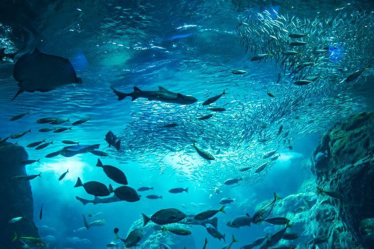

About
OCEAN BLVD🦈
Marine Life
Conservation
Sign In
MARINE
BIOLOGY
Marine biology is the study of marine organisms, their behaviors
and interactions with the environment.
Marine biologists study biological oceanography and the associated
fields of chemical, physical, and geological oceanography
to understand marine organisms.
What are the sub fields in Marine Biology?
- Microbiology
- Fisheries and Aquaculture
- Environmental Marine Biology
- Deep-sea Ecology
- Ichthyology
- Marine Mammology
- Marine Ethology